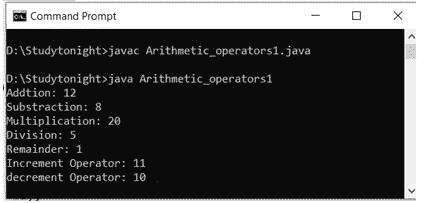
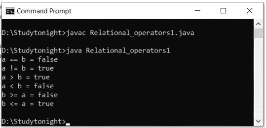
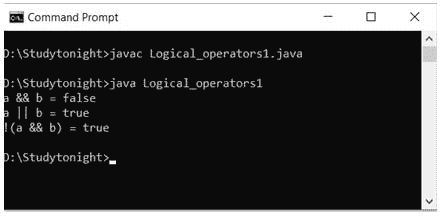
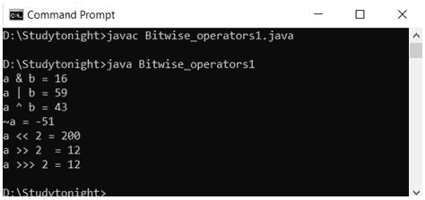
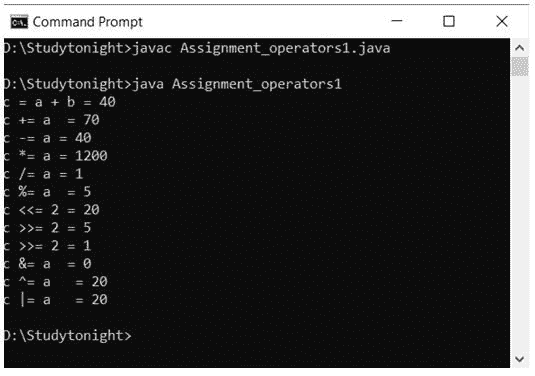
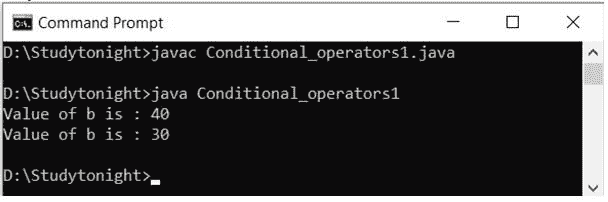
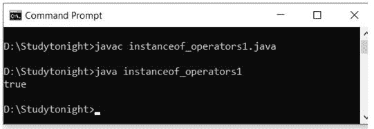

Java 运算符
运算符是告诉编译器执行某种操作的符号。Java 提供了一套丰富的操作符来处理各种类型的操作。有时我们需要执行算术运算，然后我们使用加号(+)运算符进行加法，乘法(*)进行乘法等。
运算符始终是任何编程语言必不可少的部分。
Java 操作符可以分为以下几类:
- 算术运算符
- 关系运算符
- 逻辑运算符
- 按位运算符
- 赋值运算符
- 条件运算符
- 杂项操作员
算术运算符
算术运算符用于执行算术运算，如:加法、减法等，有助于解决数学表达式。下表包含算术运算符。
| 操作员 | 描述 |
| + | 将两个操作数相加 |
| - | 从第一个操作数中减去第二个操作数 |
| * | 乘以两个操作数 |
| / | 分子除以枚举数 |
| % | 除法的余数 |
| ++ | 增量运算符将整数值增加 1 |
| -- | 递减运算符将整数值减少 1 |
示例:
让我们创建一个例子来理解算术运算符及其运算。
class Arithmetic_operators1{
public static void main(String as[])
{
int a, b, c;
a=10;
b=2;
c=a+b;
System.out.println("Addtion: "+c);
c=a-b;
System.out.println("Substraction: "+c);
c=a*b;
System.out.println("Multiplication: "+c);
c=a/b;
System.out.println("Division: "+c);
b=3;
c=a%b;
System.out.println("Remainder: "+c);
a=++a;
System.out.println("Increment Operator: "+a);
a=--a;
System.out.println("decrement Operator: "+a);
}
}

关系运算符
关系运算符用于测试操作数或值之间的比较。它可以用来测试两个值是否相等或不相等或小于或大于等。
下表显示了 Java 支持的所有关系运算符。
| 操作员 | 描述 |
| == | 检查两个操作数是否相等 |
| != | 检查两个操作数是否不相等。 |
| > | 检查左边的操作数是否大于右边的操作数 |
| < | 检查左边的操作数是否小于右边的操作数 |
| >= | 检查左操作数是否大于或等于右操作数 |
| <= | 检查左边的操作数是否小于或等于右边的操作数 |
示例:
在这个例子中，我们使用关系运算符来测试比较，如小于、大于等。
class Relational_operators1{
public static void main(String as[])
{
int a, b;
a=40;
b=30;
System.out.println("a == b = " + (a == b) );
System.out.println("a != b = " + (a != b) );
System.out.println("a > b = " + (a > b) );
System.out.println("a < b = " + (a < b) );
System.out.println("b >= a = " + (b >= a) );
System.out.println("b <= a = " + (b <= a) );
}
}

逻辑运算符
逻辑运算符用于检查条件表达式。例如，我们可以在 if 语句中使用逻辑运算符来计算基于条件的表达式。我们也可以将它们用于循环来评估条件。
Java 支持以下 3 个逻辑运算符。假设我们有两个变量，它们的值是:a =真和b =假。
| 操作员 | 描述 | 例子 |
| && | 逻辑“与” | (a && b)为假 |
| || | 逻辑或 | (a || b)是真的 |
| ! | 逻辑非 | (!a)是假的 |
示例:
在这个例子中，我们使用逻辑运算符。这些运算符返回真值或假值。
class Logical_operators1{
public static void main(String as[])
{
boolean a = true;
boolean b = false;
System.out.println("a && b = " + (a&&b));
System.out.println("a || b = " + (a||b) );
System.out.println("!(a && b) = " + !(a && b));
}
}

按位运算符
按位运算符用于一点一点地执行操作。
Java 定义了几个按位运算符，可以应用于长整型、整型、短整型、字符型和字节型。
下表显示了 Java 支持的所有按位运算符。
| 操作员 | 描述 |
| & | 按位“与” |
| | | 按位“或” |
| ^ | 按位异或 |
| << | 左移 |
| >> | 右移 |
现在让我们来看看按位&、|和^的真值表
| a | b | a & b | a | b | a ^ b |
| Zero | Zero | Zero | Zero | Zero |
| Zero | one | Zero | one | one |
| one | Zero | Zero | one | one |
| one | one | one | one | Zero |
按位移位运算符移位位值。左操作数指定要移位的值，而右操作数指定值中的位要移位的位置数。两个操作数具有相同的优先级。
Example:
让我们创建一个演示按位运算符工作原理的示例。
a = 0001000
b = 2
a << b = 0100000
a >> b = 0000010
class Bitwise_operators1{
public static void main(String as[])
{
int a = 50;
int b = 25;
int c = 0;
c = a & b;
System.out.println("a & b = " + c );
c = a | b;
System.out.println("a | b = " + c );
c = a ^ b;
System.out.println("a ^ b = " + c );
c = ~a;
System.out.println("~a = " + c );
c = a << 2;
System.out.println("a << 2 = " + c );
c = a >> 2;
System.out.println("a >>2 = " + c );
c = a >>> 2;
System.out.println("a >>> 2 = " + c );
}
}

赋值运算符
赋值运算符用于给变量赋值。它还可以与算术运算符结合使用来执行算术运算，然后将结果赋给变量。Java 支持赋值运算符如下:
| 操作员 | 描述 | 例子 |
| = | 将右侧操作数的值赋给左侧操作数 | a = b |
| += | 将右操作数与左操作数相加，并将结果分配给左操作数 | a+=b同a=a+b |
| -= | 从左操作数中减去右操作数，并将结果分配给左操作数 | a-=b与=a-b相同 |
| *= | 将左操作数与右操作数相乘，并将结果赋给左操作数 | a*=b同a=a*b |
| /= | 用右操作数除左操作数，并将结果分配给左操作数 | a/=b同a=a/b |
| %= | 使用两个操作数计算模数，并将结果分配给左操作数 | a%=b同a=a%b |
示例:
让我们创建一个例子来理解赋值运算符的用法。所有赋值运算符都有从右到左的关联性。
class Assignment_operators1{
public static void main(String as[])
{
int a = 30;
int b = 10;
int c = 0;
c = a + b;
System.out.println("c = a + b = " + c );
c += a ;
System.out.println("c += a = " + c );
c -= a ;
System.out.println("c -= a = " + c );
c *= a ;
System.out.println("c *= a = " + c );
a = 20;
c = 25;
c /= a ;
System.out.println("c /= a = " + c );
a = 20;
c = 25;
c %= a ;
System.out.println("c %= a = " + c );
c <<= 2 ;
System.out.println("c <<= 2 = " + c );
c >>= 2 ;
System.out.println("c >>= 2 = " + c );
c >>= 2 ;
System.out.println("c >>= 2 = " + c );
c &= a ;
System.out.println("c &= a = " + c );
c ^= a ;
System.out.println("c ^= a = " + c );
c |= a ;
System.out.println("c |= a = " + c );
}
}

杂项操作员
java 语言很少支持其他操作符。
条件运算符
它也被称为三进制运算符，因为它与三个操作数一起工作。它是 if-else 语句的简称。可用于评估布尔表达式，返回真或假的值
epr1 ? expr2 : expr3
示例:
在三元运算符中，如果 epr1 为真，则表达式在问号(？) else 在冒号(:)后求值。见下面的例子。
class Conditional_operators1{
public static void main(String as[])
{
int a, b;
a = 20;
b = (a == 1) ? 30: 40;
System.out.println( "Value of b is : " + b );
b = (a == 20) ? 30: 40;
System.out.println( "Value of b is : " + b );
}
}

instanceOf运算符
它是一个 java 关键字，用于测试给定的引用是否属于提供的类型。类型可以是类或接口。返回真或假。
示例:
在这里，我们创建了一个存储“今晚学习”的字符串引用变量。因为它存储字符串值，所以我们使用 isinstance 运算符测试它，以检查它是否属于String类。见下面的例子。
class instanceof_operators1{
public static void main(String as[])
{
String a = "Studytonight";
boolean b = a instanceof String;
System.out.println( b );
}
}
